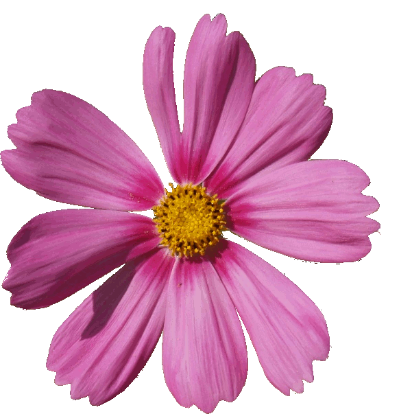

Imágen editada
- Paso 1:
-
Abrimos la foto de la flor, seleccionamos la flor, la copiamos y le damos a selección->pegar como
nuevo.
- Paso 2:
-
Escalamos la nueva imagen a 200x200px.
- Paso 3:
-
Abrimos el diálogo de capas, necesitaremos una capa por cada imagen de la animación.
Vamos a copiar y pegar la flor. A la selección flotante le damos a capa nueva y pulsamos sobre el
ojo de la capa más baja para ocultarla.
- Paso 4:
-
Para quitar un pétalo usaremos la herramienta goma de borrar.
Cuando hayamos borrado un pétalo, duplicamos la capa (desde el diálogo de capas, pulsamos con el botón derecho y seleccionamos duplicar capa).
Dejamos visible solamente esta última capa y repetimos el proceso hasta que la última capa sólo tenga la flor sin pétalos.
- Paso 5:
-
Cuando tengamos todas las capas listas, le damos al ojo para hacerlas visibles.
- Paso 6:
-
A continuación le daremos a guardar como y guardamos la imagen con extensión gif.
Nos dirá que la imagen debe ser exportada, este mensaje ya nos apareció en ejercicios anteriores.
Esta vez tenemos que marcar la opción "guardar como animación" y pulsamos exportar.
En la siguiente ventana que se nos abre, en la casilla correspondiente al retardo entre fotogramas marcamos 400,
en la opción de colocación de cuadros elegimos "un cuadro por capa (reemplazar)" y le damos a aceptar.
Imágen de flor editada
Imágen original

Imágen editada
